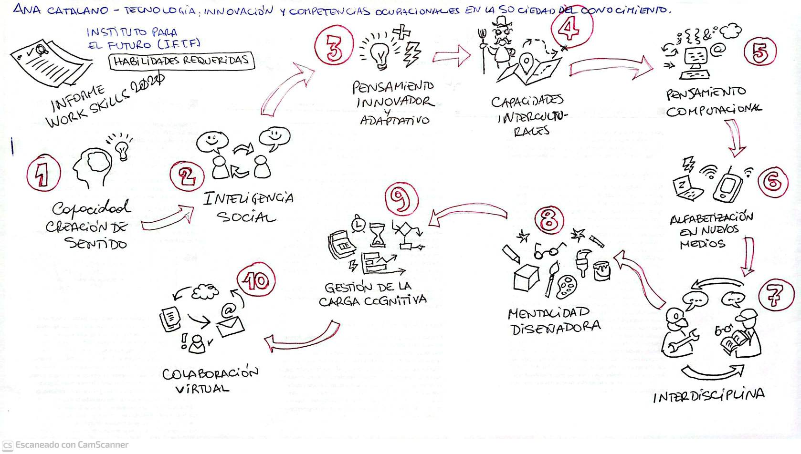

Tecnología, Innovación y Competencias Ocupacionales en la Sociedad del Conocimiento
Ana Catalano. Clase 3.
 audio
audio  original
original  resumen
resumen  IFTF
IFTF  actividad
actividad
Informe Work Skills 2020 del Institute For The Future (IFTF)

Las 10 Competencias y Habilidades Requeridas en el empleo del futuro
1. Creación de sentido
Una de las capacidades más valoradas en los entornos laborales del futuro es la creación de sentido. No se trata solo de acumular datos, sino de saber interpretarlos, darles un propósito, conectar la información con los problemas reales y extraer de ella ideas útiles para la toma de decisiones.
En educación técnica y profesional, esta habilidad se entrena cuando el estudiante no solo calcula el consumo energético de una máquina, sino que reflexiona sobre cómo optimizarlo, reducir costos, o aplicar esos datos para mejorar el funcionamiento de todo un sistema.
Es la diferencia entre resolver un ejercicio y comprender qué sentido tiene aplicarlo en la realidad del trabajo.
2. Inteligencia social
La inteligencia social es la capacidad de interactuar de forma empática y eficaz con los demás. En el mundo del trabajo, la cooperación, la comunicación clara y la empatía son tan importantes como el conocimiento técnico.
En la formación técnica, se pone en juego cuando un grupo de estudiantes de mecánica automotriz trabaja sobre un vehículo y necesita distribuir tareas, escuchar ideas, resolver diferencias de opinión y llegar a acuerdos en equipo.
Desarrollar esta competencia es fundamental para insertarse en equipos de trabajo reales, donde los vínculos personales también influyen en la calidad del producto final.
3. Pensamiento innovador y adaptativo
Este tipo de pensamiento implica la capacidad de generar ideas nuevas, flexibles y útiles ante desafíos cambiantes. Es pensar fuera de lo previsto, adaptarse a lo inesperado y no bloquearse cuando los planes no salen como se esperaba.
Un ejemplo en educación profesional: cuando un estudiante de refrigeración se encuentra con un sistema antiguo y sin repuestos disponibles. Debe pensar soluciones creativas, combinar piezas, rediseñar un circuito.
La innovación no siempre es tecnología de punta; muchas veces es ingenio aplicado a los límites reales del contexto.
4. Competencias interculturales
Estas competencias se refieren a la capacidad de colaborar con personas de diferentes culturas, realidades y formas de ver el mundo. En economías globalizadas y sociedades diversas, saber trabajar con otros es clave.
En la ETP, por ejemplo, un técnico en alimentos que trabaja con productores de distintas comunidades rurales necesita comprender sus costumbres, adaptarse a sus formas de organización y comunicarse con respeto y claridad.
Esto se puede desarrollar con proyectos que integren comunidades diversas, experiencias de intercambio o simulaciones de atención al cliente con perfiles culturales variados.
5. Pensamiento computacional
No se trata solo de programar, sino de pensar como lo hace una computadora para resolver problemas complejos: descomponerlos en pasos, identificar patrones, automatizar procesos y trabajar con lógica.
En la formación técnica, aparece claramente cuando un estudiante de automatización industrial debe programar un PLC para controlar una cinta transportadora. Debe pensar el proceso en bloques lógicos, paso a paso, y traducirlo a un lenguaje formal.
También se entrena cuando se resuelven problemas con algoritmos, simulaciones o modelado.
6. Alfabetización en nuevos medios
Es la habilidad de leer, interpretar, producir y compartir información en entornos digitales. No basta con saber usar herramientas, sino con entender su lógica, sus riesgos, sus usos éticos.
En la educación técnica, por ejemplo, cuando estudiantes de diseño publicitario digital crean contenido para redes sociales, deben comprender no solo cómo usar Canva o Illustrator, sino cómo comunicar una idea, a quién dirigirla, y con qué impacto.
También se ejercita cuando se analizan fake news, publicidad engañosa o tendencias digitales vinculadas al área técnica.
7. Enfoque interdisciplinario
La vida real no divide los saberes en materias. Por eso se valora la capacidad de integrar conocimientos de distintas disciplinas para comprender y resolver problemas complejos.
En ETP, un ejemplo claro sería el diseño de una vivienda sustentable: se necesita conocimiento de arquitectura, eficiencia energética, costos, materiales, medioambiente y hasta aspectos legales.
Fomentar la interdisciplinariedad es permitir proyectos que atraviesen fronteras curriculares, que integren conocimientos técnicos, sociales y ambientales.
8. Mentalidad de diseño
Tener una mentalidad de diseño significa pensar siempre en cómo mejorar un producto o proceso desde la experiencia del usuario. No se trata solo de hacer que algo funcione, sino de que funcione bien, sea útil, práctico y satisfactorio.
Un estudiante de electromecánica, por ejemplo, puede rediseñar una máquina para que ocupe menos espacio, sea más fácil de limpiar y genere menos ruido. Esa mirada no es solo técnica, sino centrada en quien lo va a usar.
9. Gestión de la carga cognitiva
Esta competencia refiere a la capacidad de organizar, filtrar y priorizar información para no saturarse y poder tomar decisiones efectivas. En un mundo sobrecargado de datos, saber manejar la atención es tan importante como saber mucho.
En el aula técnica, esto se ve cuando el docente ayuda a los estudiantes a clasificar la información en categorías, usar mapas mentales, destacar lo importante de lo accesorio. O cuando se diseñan entornos que no distraigan, sino que enfaticen lo esencial.
También es clave al usar software de simulación, donde se debe atender a múltiples variables sin perder el foco.
10. Colaboración virtual
Finalmente, la colaboración virtual es la capacidad de trabajar con otros de forma eficaz a través de plataformas digitales. No solo usar Zoom o Google Drive, sino compartir ideas, producir en conjunto y sostener el vínculo a distancia.
En la ETP, por ejemplo, cuando estudiantes de distintas sedes trabajan en un proyecto común, se reparten tareas, cargan documentos, se corrigen entre sí y presentan un producto grupal.
También se entrena en aulas virtuales, foros colaborativos o actividades asincrónicas, donde cada uno gestiona su tiempo y su aporte al grupo.